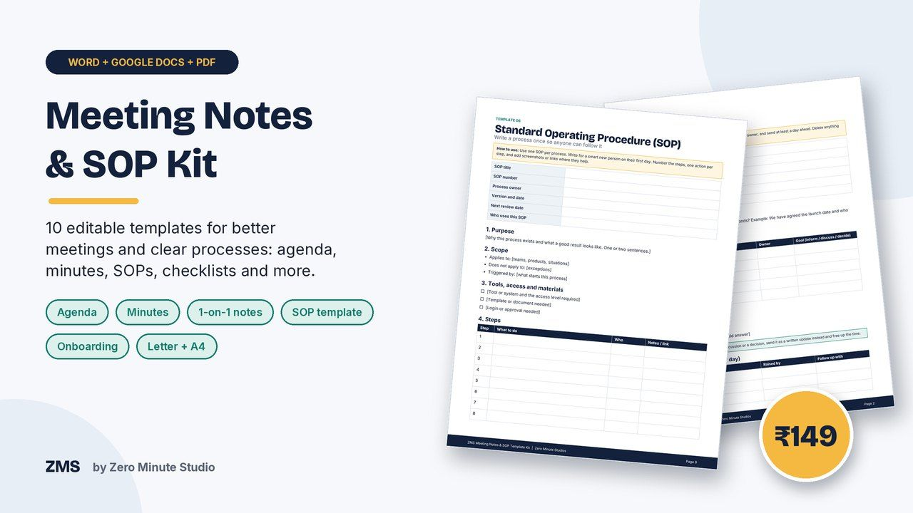
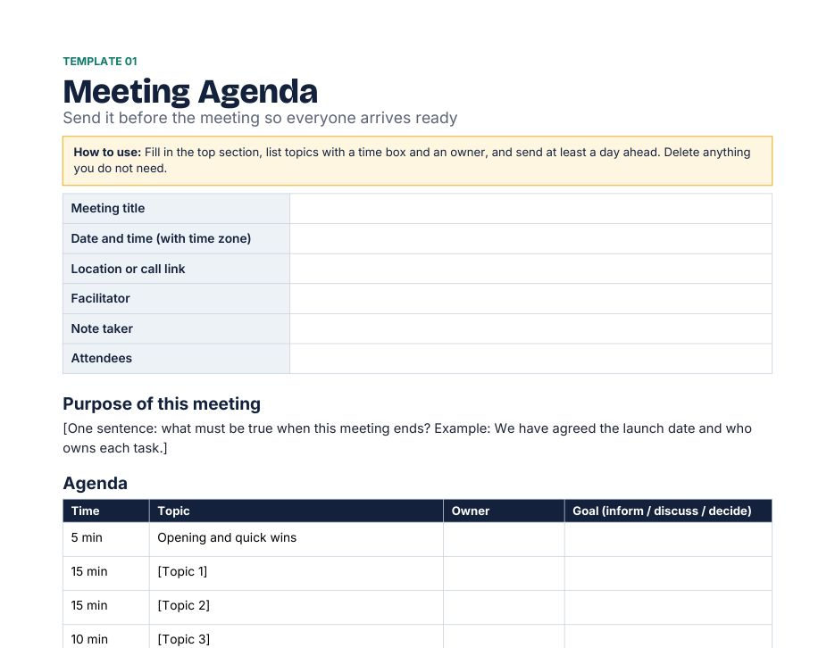
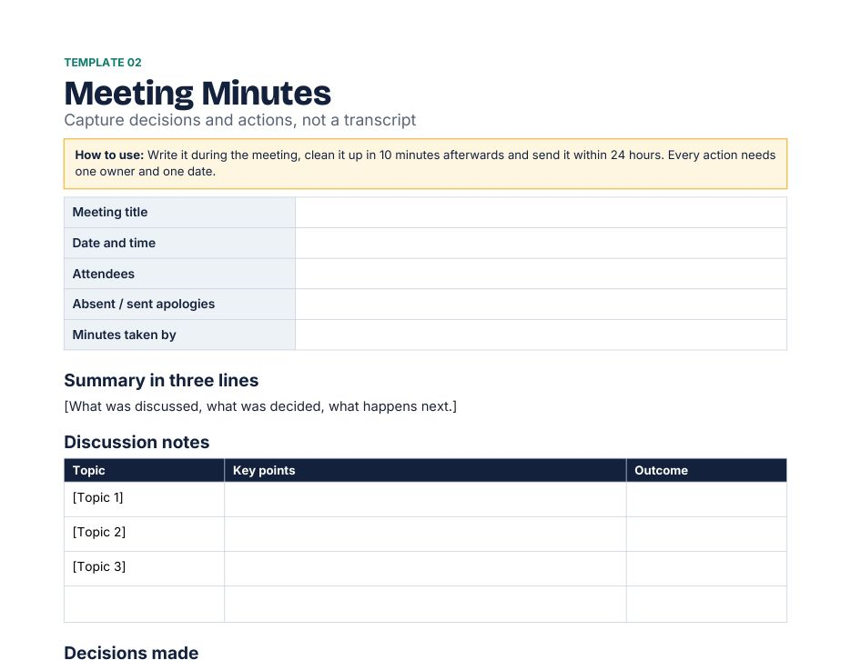
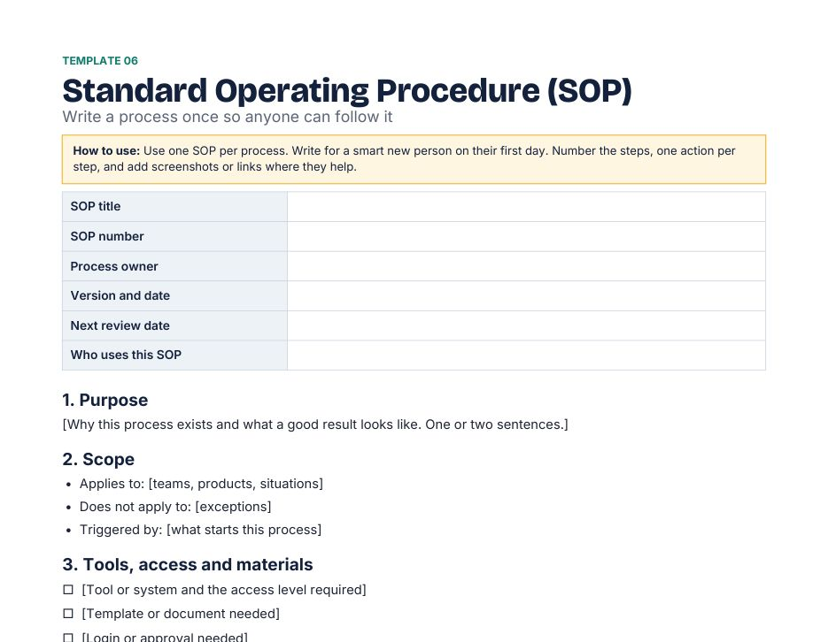
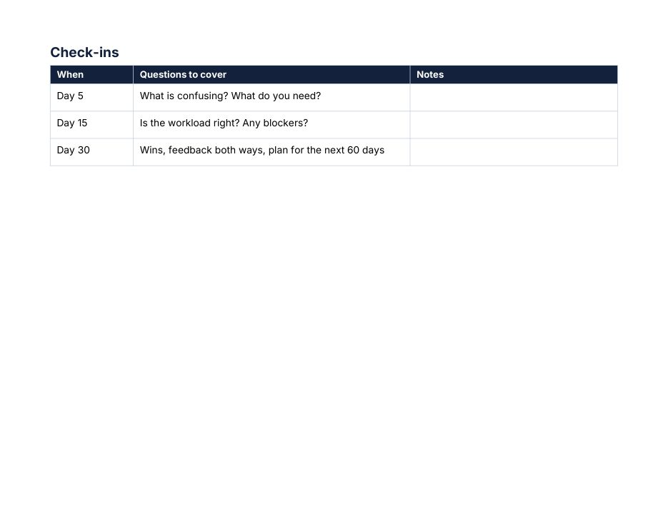

Meeting Notes & SOP Template Kit

Run shorter meetings and stop losing what was agreed. Ten ready-to-edit templates cover meetings, follow-ups and standard operating procedures, so your team always knows who does what by when, and how the work is done. Replace the bracketed text and use.
- Meeting Agenda
- Meeting Minutes
- One-on-One Meeting Notes
- Action Item & Decision Log
- Weekly Status Report
- Standard Operating Procedure (SOP) Template
- Process Checklist
- New Hire Onboarding Checklist
- Incident & Post-Mortem Report (blameless)
- SOP Index & Review Schedule
Editable Word files that also open in Google Docs. US Letter and A4 versions of every template, plus an 18-page print-ready PDF preview.
Preview




FAQ
What format are the files? Editable Word (.docx), which also open in Google Docs, in US Letter and A4, plus a PDF preview.
Who is it for? Managers, founders, freelancers and small teams.
How do I get it? Instantly after payment. For your own business use; please don't resell the files.
We don't do refund & return ✌️